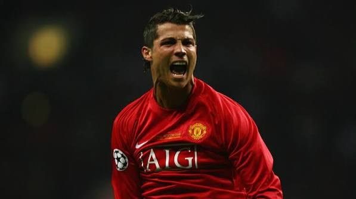

Jugador portugues en la liga arabe con pasado en Europa. Cristiano Ronaldo dos Santos Aveiro es un futbolista y empresario portugués. Juega de delantero y su equipo actual es el Al-Nassr F. C. de la Liga Profesional Saudí. Es internacional absoluto con la selección de Portugal, de la cual es capitán y máximo goleador histórico